Vista lateral
Vista frontal
Esquema
Planta
Rascunho:
Configurador de sistemas de armazenagem: lista de peças, pesos e desenho padronizado.
Primeira vez? Veja o treinamentoEscolha o tipo de estrutura. Cada tipo tem cálculo, lista de peças e desenho próprios.
Armazenagem compacta, acesso pela frente. Braços em balanço e trilho.
Seletivo, acesso direto a cada palete. Longarinas e montantes.
Cargas longas: barras, tubos, perfis e chapas.
Dinâmico por gravidade, FIFO. Roletes inclinados.
Mezanino para ampliar área útil. Pisos, vigas e escada.
O PaletCad monta o projeto de uma estrutura de armazenagem a partir dos dados do cliente. Hoje o módulo disponível é o Drive-In. Ele entrega:
O app não faz dimensionamento estrutural. Ele monta a estrutura com as peças padrão; a verificação de cargas, folgas, empilhadeira e interferências do galpão é de quem projeta e aprova.
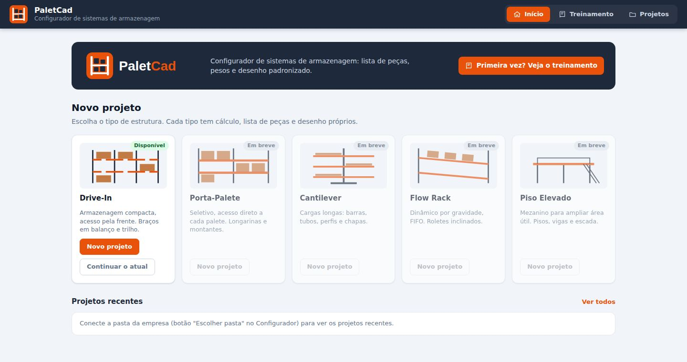
projetos/NOME.drivein.json) e uma cópia da revisão (projetos/revisoes/). Cada salvamento gera uma nova revisão (REV.00, REV.01…), com quem salvou e o que mudou..drivein.json. Novo: começa um projeto em branco.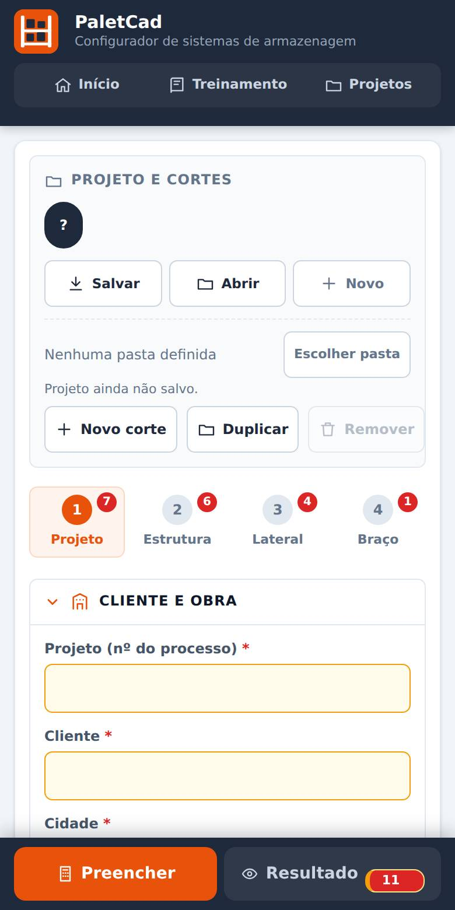
| Projeto (nº do processo) | Número do processo. Vai no carimbo e no nome dos arquivos. |
|---|---|
| Cliente, Cidade, UF | Vão para o carimbo da folha. |
| Representante / Responsável técnico | Vão para o carimbo. |
| Nome do corte | Ex.: A, B, Câmara 1. Aparece no título das vistas. |
| Blocos iguais | Quantas vezes este corte se repete. |
| Revisão | Preenchida pelo app a cada salvamento. |
| Desenhista | Quem está fazendo o projeto. |
| Observações | Livre, fica no projeto. |
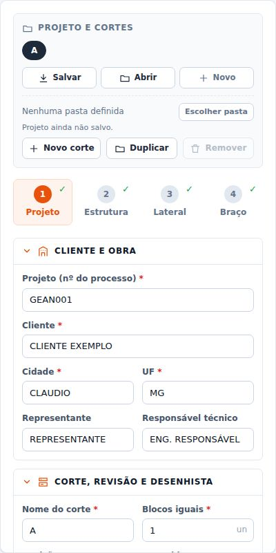
| Ruas | Quantidade de ruas (entradas da empilhadeira). Laterais = ruas + 1. |
|---|---|
| Níveis (chão + níveis) | Total de paletes na altura, contando o do chão. |
| Pé-direito do galpão | Opcional. Aparece como linha no desenho e o app avisa se a estrutura passar. |
| Palete – frente, profundidade, altura, carga | Medidas do palete com carga (mm e kg). A frente é o lado que fica voltado para a entrada da rua. |
| Palete escravo no 1º nível | Marque quando forem 2 paletes empilhados no chão. |
| Ajustes manuais (opcional) | Paletes por rua, 1º nível (apoio) e Altura total: só preencha se quiser forçar um valor diferente do calculado. Em branco, o app calcula. |
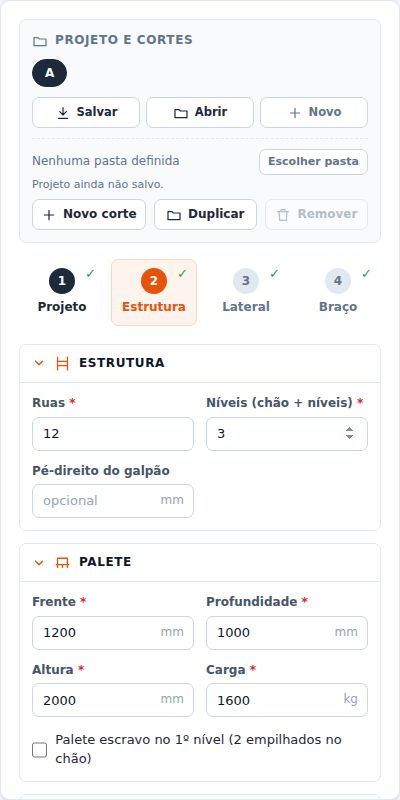
| Coluna – modelo e espessura | COL 80, 101, 122 ou 80 duplada, e a chapa da coluna. O modelo define sapata, braço padrão, caneleira e travessas. |
|---|---|
| Espaços | Quantidade de espaços entre colunas na profundidade (colunas por lateral = espaços + 1). |
| Medida do espaço | Passo entre colunas (ex.: 1025, 788). |
| Espaços com medidas diferentes | Marque para informar cada espaço (A1, A2…) separadamente. |
Com número par de espaços, a última coluna fica solteira e o app coloca a travessa união.
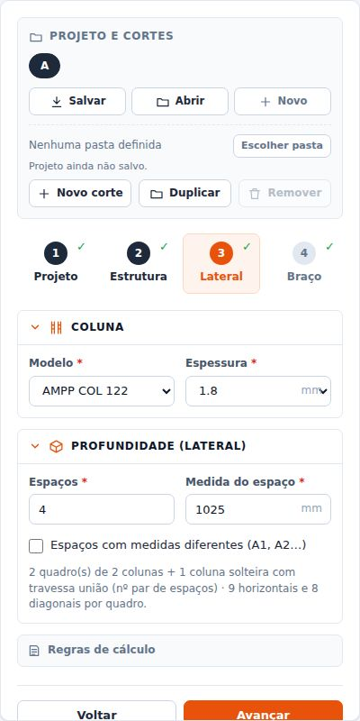
Os grupos vêm fechados mostrando o resumo; clique na setinha para abrir. O desenho ao lado mostra o que você está ajustando. Campo diferente do padrão fica marcado como personalizado.
| Suporte do braço (U) – chapa | Padrão #2,65. Altura do U = A do perfil C + 110 (automático). |
|---|---|
| Perfil C – A, C, B, D | Padrão 94 × 40 × 15. Espessura padrão: #2,0 na COL 101 e #1,8 nas COL 80 e 122 (o campo acompanha a coluna). |
| Balanço – 1º nível / demais | Padrão 180 e 230. Apoio do palete abaixo de 100 mm por lado gera aviso; abaixo de 80 mm, erro. |
| Longarina de túnel – alma, aba, chapa | A chapa é obrigatória e não tem padrão: escolha conforme o projeto (1,5 / 1,8 / 2,0…). Sem ela o app não calcula. |
Com tudo no padrão, sai o braço cadastrado (código CO e peso do desenho). Qualquer valor diferente gera braço especial, calculado e com código SA04XXXX.
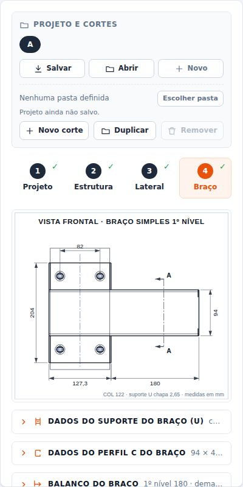
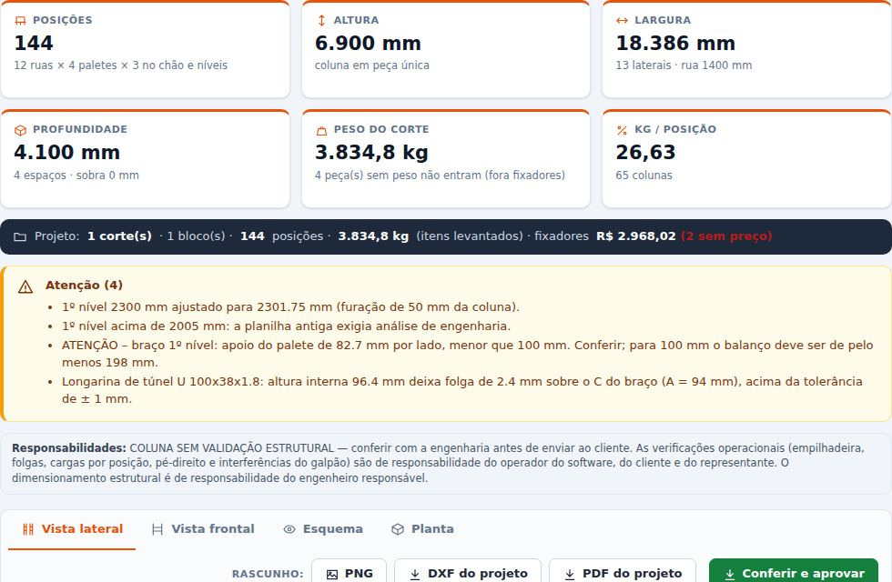
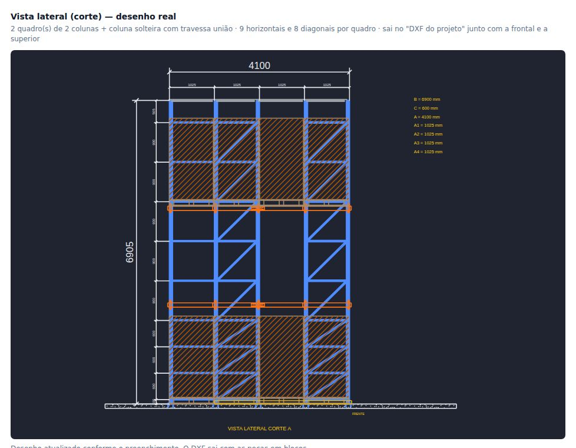
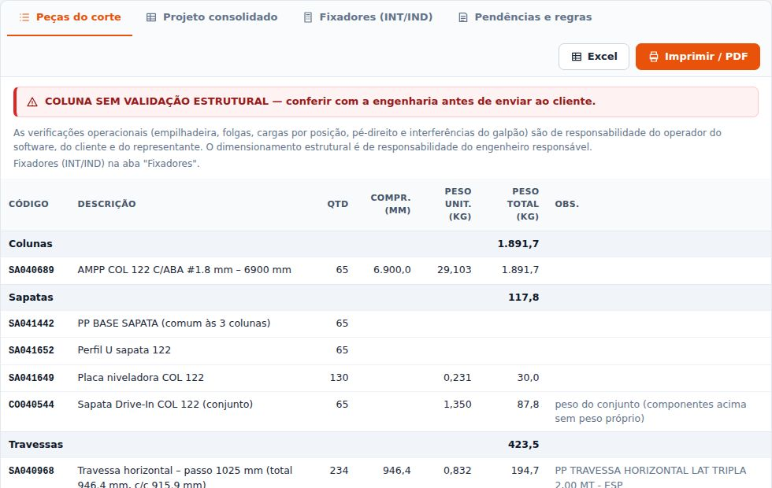
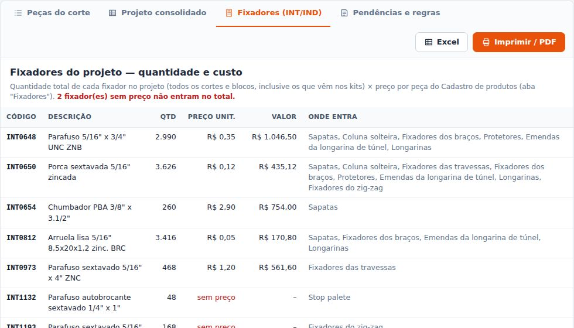
| Rascunho | Botões DXF do projeto, PDF do projeto, Excel e PNG. Saem marcados como RASCUNHO – NÃO EMITIDO (faixa vermelha, carimbo "REV-xx RASCUNHO" e "_RASCUNHO" no nome do arquivo). Use só para análise interna. |
|---|---|
| Emissão oficial | Botão Conferir e aprovar: mostra a tabela de conferência de todos os dados (personalizados em destaque) e as pendências. Marque "Conferi os dados" e "Estou ciente das pendências", informe seu nome e clique em Aprovar e emitir. |
| O que a emissão gera | Nova revisão salva como emissão + DXF + PDF das folhas + Excel + relatório de emissão em PDF (com cópia em projetos/emissoes/ se a pasta estiver ligada). As folhas saem com "PROJETO CONFERIDO E APROVADO POR [nome] EM [data]". |
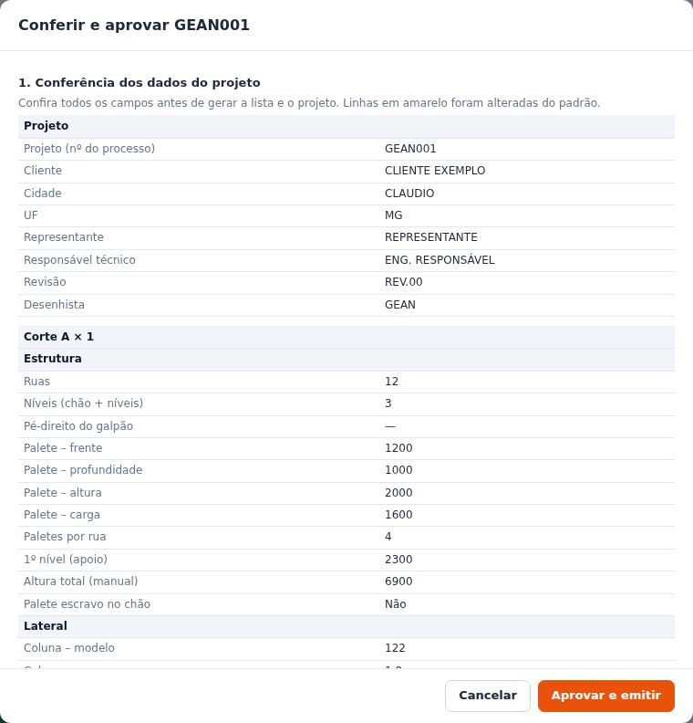
Alterou o projeto depois de emitir? Ele aparece como "Alterado após emissão". Emita de novo para gerar a revisão oficial.
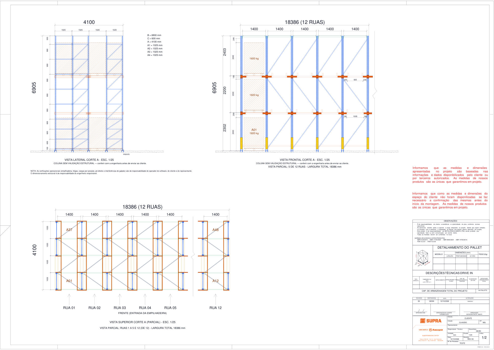
As verificações operacionais (empilhadeira, folgas, cargas por posição, pé-direito e interferências do galpão) são de responsabilidade do operador do software, do cliente e do representante. O dimensionamento estrutural é de responsabilidade do engenheiro responsável. Ao aprovar, seu nome vai nas folhas.
Código em branco = item sem cadastro (o BOM mostra SA04XXXX / COXXXXXX). Página só do administrador (senha do catálogo). "Aplicar" vale só nesta tela; "Publicar nova versão" grava a versão seguinte (autor, data e descrição) na pasta da empresa, para todos.